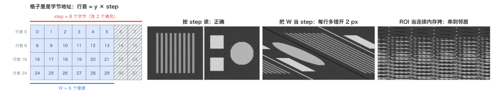
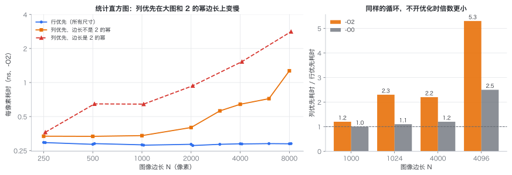
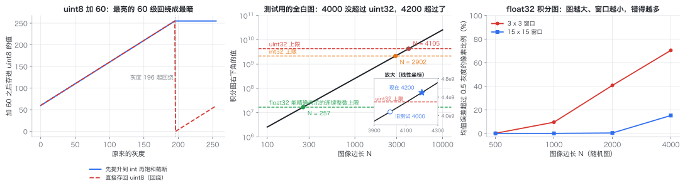
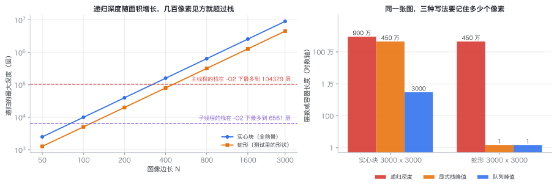
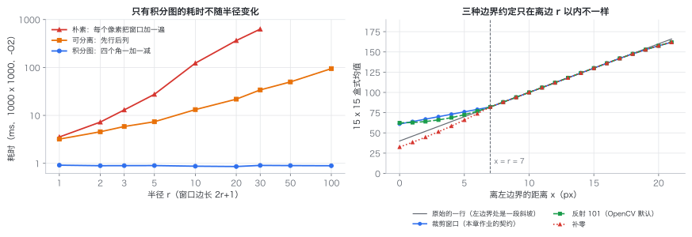
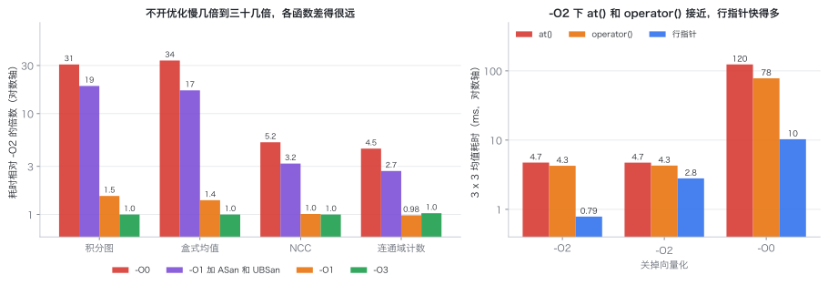

本章的数字都来自实测，记录在 figures/实测数字.json，由 solutions 分支的 solutions/figures/ch15.py 生成。这个脚本用 g++ 把参考实现和几个小基准程序编译到 /tmp 下运行，内存布局、溢出、边界、取整这类和语言无关的概念用 numpy 和 Python 版 OpenCV 复现。耗时都是在这台机器上一次测量的结果：一台 Apple 芯片的 Mac（Apple M5 Pro，macOS 26.4，命令 g++ 在这台机器上实际是 Apple clang 21，单线程），在机器空闲时测的。耗时和由耗时算出的倍数只写两位有效数字。这些值钉在 JSON 里，重跑脚本默认沿用，设置环境变量 CH15_RETIME=1 才重新计时。同一个脚本在这台机器很忙时还跑过一次（JSON 里“另一次运行的对照”一组）：多数耗时大了一到两成，同一次运行里算出的倍数大多只差百分之几，个别倍数差了一倍。下文依赖耗时的结论，两次运行都成立的照常写；不稳的写成范围，并给出两次各是多少。耗时只适合比较量级和明显的倍数，换一台机器、换编译器都会变，你在自己的 Windows 笔记本上要再测一遍。深度、阈值、误差这类不是耗时的数字，每次重跑脚本都重新计算，结果不变。第 5.2 节“现在的判据”那张表（JSON 里“验收的计时检查”一组）是 2026-11 加固验收之后补测的，测的时候这台机器上同时在跑别的任务，耗时偏大，只看倍数。凡是讲到 Windows 的地方（第 7.2 节，以及验收脚本对 Windows 的处理）都没有在 Windows 上实测过，文中逐处标了出来。
这一章不是完整的 C++ 教程，而是一份“工业视觉团队里最常用到、最容易出错”的清单。语法细节请配合 LearnCpp 查。
0. 本章怎么学
应用场景：读写产线上的 C++ 视觉代码：内存布局、积分图、连通域、CMake。算法验证常在 Python 里做，上机台的版本几乎都是 C++，新人最常见的卡点不是算法，而是看不懂工程、编不过、跑起来崩溃或者慢。
优先级：P0。没有前置章节，有一点 C 或 C++ 基础即可。第 1 章的 uint8 溢出和第 3 章的连通域在这里换成 C++ 再看一遍；后面第 16 章的 NCC、第 18 章的连通域、第 24 章的 C++ 重写都直接用到本章。
| 档位 | 累计用时 | 做什么 | 做到什么算完 |
|---|---|---|---|
| 速通 | 4 小时 | 读第 1、2、4、9 节，看懂图 1 到图 4 和图 6，把第 11 节演示的五步做一遍，答完 5 道小测 | 能讲清 step 和宽度的区别、积分图为什么用 64 位整数而不是 float、连通域为什么不能递归、Debug 和 Release 的耗时差多少 |
| 标准 | 15 小时 | 读完全章，在 15-1_图像基础.cpp 里实现 4 个函数并验收通过，开 Sanitizer 编译一次，做第 14 节前三个破坏实验，填实验记录 |
4 项测试 PASS、零警告，实验记录里有 r=1 和 r=30 的耗时、一次 ASan 报错的定位过程 |
| 深挖 | 22 小时 | 再做第 14 节后三个破坏实验和第 15 节的扩展，自己用 CMake 建一个链接 OpenCV 的工程 | 能在自己的机器上按第 12 节的格式报告一组耗时，并和 OpenCV 对拍出一致的结果 |
用时超过所选档位的 1.5 倍还没做完，就把卡点写进 学习进度.md，先往下一章走。C++ 基础薄弱时，先用 LearnCpp 补引用、const、vector 和智能指针，再回来做作业。
1. 图像在内存里长什么样
一张 H x W 的单通道 8 位图，在内存里是 H * W 个连续字节，按行排列：
地址： 0 1 ... W-1 W W+1 ...
像素： (0,0) (0,1) ... (0,W-1) (1,0) (1,1) ...
下标公式 index = y * step + x。step 是“一行占多少个元素”，通常等于 W，但不总是：
- 从大图里取 ROI 时，子图的
step还是大图的宽度，数据不连续。 - 有些相机 SDK 为了对齐会在每行末尾补字节（padding），
step > W。
所以写遍历代码时，用 step 而不是 W 算行首地址，这是新人改别人代码时最常见的越界来源。OpenCV 里对应 mat.step（字节数）和 mat.ptr<T>(y)（第 y 行行首指针）。本章的 cpp/image.hpp 为了简单没有 step 成员，数据总是连续的，行首就是 y * cols。
1.1 读错 step 会怎样
下面用 numpy 模拟读内存：一张 120 行、250 列的合成 die 图，每行后面补 2 个字节（step = 252）；另一张同样的图嵌在一张 200×400 的大图的 (40, 80) 处，作为 ROI。

| 读法（120×250 的图） | 整行完全正确的行数 | 平均绝对误差（灰度） |
|---|---|---|
| 行首 = y × step | 120 / 120 | 0.0 |
| 把 W 当成 step 读带填充的缓冲区 | 1 / 120 | 47.6 |
| 把 ROI 当成连续内存，拷 W×H 个字节 | 1 / 120 | 47.8 |
只有第 0 行是对的，后面每一行都错开，而且程序不会报任何错。ROI 这一行就是自测问题 2 的答案：ROI 视图的行步长是大图的 400 字节，不是自己的 250，数据在内存里不连续。
多通道：BGR 三通道是交错存储 B G R B G R ...。原讲义写的下标 (y * step + x) * 3 + c 只在 step 按像素计、而且没有行尾填充时成立。通用的写法是把 step 按字节算：
第 y 行行首 = y * step（字节）
像素 (y, x) 的第 c 个通道 = y * step + x * 3 + c
同样大小的 BGR 图，每行 750 个字节补齐到 4 的倍数（step = 752 字节）时，用通用写法读 G 通道 120 行全对；用原来的写法只有 1 行对。OpenCV 的 mat.step 就是按字节的。
1.2 遍历顺序
外层循环 y、内层循环 x，按地址顺序访问，缓存命中最好。反过来写（外层 x、内层 y），每次访问都跳过一整行。
实测：N×N 的 8 位随机图，同一个函数只交换内外层循环，每像素耗时取多次里最快的一次。“统计直方图”这个循环，按编译器自己的报告两种顺序都没有被自动向量化，所以差距只来自访存。下表是这台机器上一次测量的结果；标“另一次”的三行是机器很忙时另一次运行的同一组倍数，放在一起看波动有多大。

| 边长 N | 1000 | 1024 | 2000 | 2048 | 4000 | 4096 | 8000 | 8192 |
|---|---|---|---|---|---|---|---|---|
| 统计直方图，-O2，列优先慢的倍数 | 1.2 | 2.3 | 1.4 | 3.4 | 2.2 | 5.3 | 4.4 | 9.8 |
| 同上，另一次 | 1.2 | 2.3 | 1.9 | 3.5 | 2.6 | 10 | 4.8 | 10 |
| 统计直方图，-O0，列优先慢的倍数 | 1.0 | 1.1 | 1.2 | 2.5 | ||||
| 同上，另一次 | 1.1 | 1.1 | 1.5 | 3.2 | ||||
| 求和，-O2，列优先慢的倍数 | 5.4 | 12 | 5.4 | 22 | 11 | 29 | 18 | 66 |
| 同上，另一次 | 5.5 | 12 | 5.6 | 21 | 12 | 67 | 20 | 66 |
读这张表的三个结论：
- 原讲义说“大图上可能慢好几倍”，方向对，但倍数取决于尺寸。两次运行里 1000×1000 都只慢 1.2 倍，4000×4000 慢 2.2 到 2.6 倍；边长恰好是 2 的幂时，两次都比相邻的尺寸明显更慢，8192 两次都是 10 倍左右。具体的倍数不稳：4096 这次是 5.3 倍，机器很忙的那次是 10 倍，差了将近一倍；2000 是 1.4 倍和 1.9 倍。所以这张表只能读出“图越大越慢、2 的幂更慢”，不能把某一格的倍数当成定值。常见的解释是：行宽是 2 的幂时，同一列的像素落在缓存的同一组里，互相挤掉。本章没有单独验证这个解释，但相机分辨率经常是 2048、4096 这样的数，值得记住。
- 不开优化时差距反而小。-O0 下 1000×1000 两种顺序几乎一样快（1.0 倍，另一次 1.1 倍），4096 是 2.5 倍（另一次 3.2 倍）；两次运行里测过的四个尺寸，-O0 的倍数都不超过 -O2 的。原因是 -O0 每访问一个像素要多执行好几条指令，访存在总耗时里的占比小了。所以在 Debug 版里测出“顺序无所谓”，换到 Release 就不成立。
- 能向量化的循环差得更多。求和这种简单循环两种顺序编译器都报告做了向量化，但列优先时每个向量要从相隔一整行的地址拼起来，1000×1000 上列优先慢 5.4 倍，8192 慢 66 倍，另一次运行几乎一样（5.5 倍和 66 倍）。波动最大的还是 4096 这一列：这次 29 倍，另一次 67 倍。
B。实测 -O0 下 1000×1000 两种顺序的倍数是 1.0（机器很忙的另一次是 1.1），4096×4096 是 2.5（另一次 3.2）。同样的代码用 -O2 编译，4096 上慢 5.3 倍（另一次 10 倍）。遍历顺序的影响要在 Release 下测才看得出来。
2. 类型与溢出
| 场景 | 坑 | 做法 |
|---|---|---|
两个 uint8_t 相加 |
255 + 1 在存回 uint8_t 时变成 0 |
先提升到 int 计算，再饱和截断（OpenCV 的 saturate_cast） |
| 积分图 | 全白图的像素和随面积增长，int32 在 2902×2902 就装不下 |
用 uint64_t 或 double，不要用 float |
| 平方和（方差、NCC） | int 很容易溢出 |
用 double 或 int64_t |
| 有符号和无符号混用 | size_t i; i - 1 在 i=0 时变成巨大正数 |
下标用 int，或者先判断再减 |
| 浮点比较 | a == b 不可靠 |
用 std::fabs(a - b) < eps |
-Wall -Wextra 会提示有符号和无符号的比较，警告要清零，不要忽略。但它管不了表里的大多数问题，第 8 节有实测。
实测（C++ 小程序，-O2）：uint8_t 的 255 + 1 存回 uint8_t 是 0，200 + 100 是 44，100 - 200 是 156；同样的加法存到 int 是 300。size_t 的 0 - 1 是 18446744073709551615。0.1 + 0.2 == 0.3 是 false。float 的 16777216 + 1 仍然等于 16777216。

2.1 积分图到底要多少位
全白（255）的 N×N 图，像素和是 \(255N^2\)。它第一次超过各类型上限的边长：
| 类型 | 上限 | 像素和超限的边长 | 窗口平方和超限的边长 |
|---|---|---|---|
float（能精确表示的连续整数） |
16777216 | 257 | 17 |
int32_t |
2147483647 | 2902 | 182 |
uint32_t |
4294967295 | 4105 | 258 |
纠正原讲义的一个数。原讲义写“4000x4000 的全白图求和约 4e9，超过 uint32_t 上限”。实际是 4080000000，只占 uint32_t 上限的 95.0%，没有超过；它超过的是 int32_t。本章的测试原来用的正是这张 4000×4000 的图，所以只能抓住用 int 累加的实现，抓不住用 uint32_t 的。
现在测试换成了 4200×4200 的全白图：像素和是 4498200000，是 uint32_t 上限的 104.7%（图 3 中栏的放大图）。测试不只看右下角，还在 (257, 257)、(2902, 2902)、(4105, 4105) 这几个刚越过上表各类型上限的位置核对，所以用 float、int、uint32_t 累加都会被查出来，报错里第一个出错的位置能告诉你是哪一种（第 13 节）。这张图的积分图占 135 MB 内存（输入图本身另占 16.8 MB），验收时电脑上要有两百兆左右的空闲内存。
一个容易踩的坑：Python 版 OpenCV 的 cv2.integral 对 8 位图默认输出 int32。2901×2901 的全白图结果正确，2902×2902 的右下角变成了 -2147458276。大图上调它要显式传 sdepth=cv2.CV_64F。
2.2 反直觉：uint32_t 回绕了也能算对，float 没溢出却算错
uint32_t 回绕之后，矩形求和仍然是对的。无符号整数的加减是模 \(2^{32}\) 的运算，积分图里存的是真值模 \(2^{32}\)，四个角一加一减之后，只要真正的窗口和小于 \(2^{32}\)，结果就是对的。实测：5000×5000、灰度 240 到 255 的随机图，5.2% 的积分图单元已经回绕，右下角存的是 1892555749（真值 6187523045），但右下四分之一里 6240004 个 3×3 窗口的和全部正确，15×15 窗口也全部正确。这个性质只对无符号类型成立，int 溢出是未定义行为。工程上仍然推荐 uint64_t，因为整图总和、全图均值这类量会直接用到右下角那个值。作业里的 integral_image 返回 ImageU64，契约要求每个位置都是精确的和，所以用 uint32_t 累加在验收的 4200×4200 全白图上通不过。
float 积分图在常见尺寸上就不能用。float 只有 24 位有效数字，积分图里的大数相减，小窗口的和被舍入误差吞掉。用 float 递推积分图，再算盒式均值（随机图，只统计窗口完整的内部像素）：
| 图像边长 | 500 | 1000 | 2000 | 4000 |
|---|---|---|---|---|
| 3×3 均值的最大误差（灰度） | 0.67 | 2.44 | 9.67 | 39.0 |
| 3×3 均值误差超过 0.5 的像素比例 | 0.1% | 9.5% | 40.7% | 70.4% |
| 15×15 均值误差超过 0.5 的像素比例 | 0.0% | 0.0% | 0.3% | 15.2% |
2000×2000 的随机图像素总和只有 510061896，远没到任何整数类型的上限，float 版的 3×3 均值却有 40.7% 的像素错了半个灰度以上。cv2.integral(sdepth=cv2.CV_32F) 在 2000×2000 上的结果和这里完全一样。double 的有效位数多得多，全白图的平方和要到边长 372181 才会超出它能精确表示的整数范围，够用。
uint32_t 存，右下角已经回绕成了一个比真值小得多的数。用它算 3×3 窗口的像素和，结果怎样？B。无符号加减是模 \(2^{32}\) 的运算，四个角一加一减把回绕抵消了。实测 6240004 个 3×3 窗口没有一个算错。真正危险的反而是没有溢出的 float：2000×2000 的图上 40.7% 的 3×3 均值误差超过 0.5。
3. 值语义、引用和拷贝
void process(Image<uint8_t> img); // 按值传：整张图拷贝一次，慢
void process(const Image<uint8_t>& img); // const 引用：不拷贝，也不能改，读图首选
void process(Image<uint8_t>& img); // 非 const 引用：原地修改
“慢”有多慢：把一张图传给一个只读一个像素的函数，每次调用的耗时（ms，这台机器上一次测量）：
| 图像 | 按值，-O2 | 按值，-O0 | 按 const 引用，-O2 |
|---|---|---|---|
| 2000×2000（4 MB） | 0.047 | 7.7 | 低于 0.001 |
| 4000×4000（16 MB） | 0.21 | 31 | 低于 0.001 |
-O2 下拷一张 16 MB 的图只要零点二几毫秒（这次 0.21 ms，机器很忙的另一次 0.29 ms，相差约四成），单次看不出来；放进逐帧处理的循环里，或者在 Debug 版里，就是几十毫秒。读图一律传 const&。
std::vector 是值语义，赋值就是深拷贝。cv::Mat 不一样：它是引用计数的句柄，Mat b = a; 只拷贝句柄，b 和 a 指向同一块像素。要深拷贝用 a.clone() 或 a.copyTo(b)。这个差异导致过无数“我明明改的是副本，原图怎么也变了”的 bug。numpy 的切片也是视图：实测改 ROI 视图里 10×10 个像素，大图里变了 100 个像素；改 .copy() 得到的副本，大图里变了 0 个。
RAII：资源跟对象生命周期绑定。用 std::vector、std::unique_ptr 管理内存，不要手写 new/delete。相机缓冲区、文件句柄也用类包起来，在析构函数里释放。
构造函数里的检查要放在分配之前。cpp/image.hpp 的 Image(rows, cols) 原来的写法是先在初始化列表里用 rows * cols 分配 vector，再在函数体里检查负数。这样写时 Image(-1, 5) 实测抛出的是 std::length_error（负数乘积转成 size_t 变成巨大的数，分配失败），而不是注释里说的 std::invalid_argument；两个都为负时乘积是正的，才走到检查。现在的 image.hpp 已经改成先检查再分配：检查放在 rows 和 cols 两个成员的初始化里，它们声明在 data 前面，所以先执行；两种情况实测都抛 std::invalid_argument。作业不会构造负尺寸的图，这里要记住的是：成员按声明的顺序初始化，自己写类时把校验排在分配之前。
4. 不要用递归做连通域和泛洪填充
一个 3000x3000 的蛇形前景区域，递归深度可达几百万层，默认栈（macOS 主线程 8 MB，子线程通常更小）一定会溢出，表现是程序直接崩溃（Segmentation fault），而且只在大图上出现。正确做法是用 std::queue（BFS）或 std::vector 当显式栈（DFS）。本章测试专门放了一个蛇形大区域来检查这一点。
实测：一个最朴素的递归泛洪填充（4 连通，按上、下、左、右的顺序递归），在 N×N 的图上运行。蛇形和测试里的完全相同，实心块是全前景。这台 Mac 上主线程的栈是 7.98 MB，pthread 子线程默认 512 KB。

| 条件（这份递归代码，这个编译器） | 每层占用的栈 | 主线程：实心块最大边长 | 主线程：蛇形最大边长 | 子线程：实心块最大边长 |
|---|---|---|---|---|
| -O2 | 80 字节 | 323（104329 层） | 456 | 81 |
| -O0 | 48 字节 | 417（173889 层） | 589 | 105 |
几点读法：
- 几百像素见方就够崩溃。不需要 3000×3000，-O2 编译时一个 324×324 的实心块就在主线程上溢出。递归深度随前景面积线性增长：3000×3000 的蛇形是 4501500 层，实心块是 9000000 层，按每层 80 字节要 343 MB 和 687 MB 的栈。
- 子线程更容易崩。512 KB 的栈只够 81×81 的实心块。产线软件的算法通常跑在工作线程里，在主线程上测过不等于安全。主线程溢出收到的是 SIGSEGV，子线程收到的是 SIGBUS，验收脚本里看到的返回码会不同。
- 反直觉：Debug 版能处理的图比 Release 版大。这份代码在 -O2 下每层用 80 字节，-O0 下只用 48 字节（多半是优化后的版本在函数开头保存了更多寄存器，本章没有逐条核对汇编）。370×370 的实心块，-O0 编译跑完了，-O2 编译栈溢出。“Debug 里好好的，Release 里崩了”不一定是未定义行为，也可能只是栈帧大小变了。
- 显式栈不等于省内存。不用递归时，容器里最多同时有多少像素（3000×3000）：
| 形状、连通性 | 前景像素 | 队列（BFS）峰值 | 显式栈（DFS）峰值 |
|---|---|---|---|
| 实心块，4 连通 | 9000000 | 3000 | 4498501（50.0%） |
| 实心块，8 连通 | 9000000 | 5999 | 3004500（33.4%） |
| 蛇形，4 连通 | 4501500 | 1 | 1 |
| 蛇形，8 连通 | 4501500 | 2 | 3000 |
两种写法都“入队或入栈时就标记”。显式栈在实心块上峰值是前景的一半，每个元素是 8 字节的 std::pair<int, int>，共 34.3 MB，放在堆上不会崩，但比队列多三个数量级。队列的峰值大约是连通域的一条“波前”，和边长同量级。
把测试里的 3000×3000 蛇形交给递归实现，-O0 和 -O2 都在主线程上溢出。这时验收的“连通域计数”一项显示 FAIL：“程序在‘3000x3000 的蛇形大区域’这一步异常退出（被信号 SIGSEGV 终止，返回码 -11）”，负号表示进程是被信号杀掉的；另外三项照常显示 PASS。
加固之前的测试做不到这一点：验收只剩一行“程序异常退出（返回码 -11）”，四项的结果一项也看不到，因为测试程序的输出还在缓冲区里，进程就被杀掉了。现在测试程序每输出一行就刷新一次，蛇形也放到了连通域测试的最后，前面的小图先查完，所以报错能说出“小图都对、大区域才崩”。这是一条通用的经验：可能崩溃的程序，日志要逐行刷新。Windows 上没有信号，进程的返回码是一个很大的数（按微软的文档，栈溢出是 0xC00000FD），验收脚本会把它翻译成“栈溢出”；这一条没有在 Windows 上实测过。
第 11 节的交互演示可以在小图上看三种写法各自要记住多少像素。
B。递归深度相同（每个前景像素一层），但 -O2 版每层占 80 字节，-O0 版只占 48 字节，-O0 的极限是 417×417，-O2 是 323×323。优化不一定让栈用得更少，Debug 里能跑的图，Release 里可能崩。
5. 积分图：让任意矩形求和变成 O(1)
定义 II(y, x) = sum(img[0..y-1, 0..x-1])，尺寸为 (H+1) x (W+1)，多出的第 0 行和第 0 列全为 0，这样就不用处理边界特判。矩形 [y0, y1) x [x0, x1) 的和是：
S = II(y1, x1) - II(y0, x1) - II(y1, x0) + II(y0, x0)
递推：II(y+1, x+1) = II(y, x+1) + rowsum(y, 0..x)。
用途：盒式滤波、局部均值和方差（同时维护平方的积分图）、NCC 分母加速、Haar 特征。本章的盒式均值要求“耗时与半径无关”，测试会在同一张图上比较 r=1 和 r=10、30、200 的耗时（第 5.2 节）。
5.1 三种复杂度实测
同一个盒式均值（边界约定相同），三种写法，1000×1000 的随机图，-O2，耗时 ms（这台机器上一次测量）：

| 半径 r | 1 | 3 | 10 | 30 | 100 |
|---|---|---|---|---|---|
| 朴素：每个像素把窗口加一遍，\(O(r^2)\) | 3.5 | 13 | 120 | 630 | 没测 |
| 可分离：先行后列，\(O(r)\) | 3.2 | 5.9 | 13 | 34 | 95 |
| 积分图，\(O(1)\) | 0.91 | 0.89 | 0.87 | 0.90 | 0.89 |
积分图在所有半径下的耗时，最慢的是最快的 1.1 倍；r=30 时朴素写法慢 700 倍左右，可分离写法慢 38 倍。机器很忙的另一次运行里这些耗时都大了一到两成，这三个倍数只差百分之几，结论相同。
5.2 测试的计时检查能抓住什么
现在的判据。验收在一张 1200×1200 的随机图上做：r=1 和 r=R 先各调用一次预热，再交替运行最多 7 轮，各取最快的一次；只有 r=R 最快的一次超过 r=1 最快一次的 4 倍再加 2 毫秒，才判“耗时随半径增长”。R 依次取 10、30、200，哪一级超了就停，不再测更大的。预热、重复多次取最快、交替运行、在同一次运行里比较，正是第 12 节讲的计时方法。
把几种实现各跑 5 遍（两种很慢的跑 3 遍），每个半径取各遍的中位数。表里是这台机器上一次测量的结果，测的时候机器上同时在跑别的任务，耗时偏大，只看倍数；“r=1 最快”取的是和 r=10 交替计时的那一组：
| 实现 | r=1 最快（ms） | r=10 是它的几倍 | r=30 是它的几倍 | r=200 是它的几倍 | 在哪个半径被拦下 | 连跑验收，盒式均值通过的次数 |
|---|---|---|---|---|---|---|
| 积分图（参考实现），\(O(1)\) | 2.2 | 1.0 | 1.0 | 1.0 | 没有 | 5 / 5 |
| 行和列都用滑动和，不用积分图，\(O(1)\) | 2.5 | 1.0 | 1.0 | 1.0 | 没有 | 5 / 5 |
| 可分离 \(O(r)\)，每个像素把窗口加一遍 | 5.4 | 3.4 | 7.6 | 没测 | r=30 | 0 / 5 |
| 可分离 \(O(r)\)，按行累加（编译器能向量化） | 2.8 | 2.2 | 4.3 | 15 | r=200 | 0 / 5 |
| 内部用积分图，离边不到 r 的像素逐个暴力求和 | 2.3 | 2.9 | 35 | 没测 | r=30 | 0 / 3 |
| 朴素 \(O(r^2)\) | 6.6 | 33 | 没测 | 没测 | r=10 | 0 / 3 |
几点读法：
- 两种 \(O(1)\) 的写法三个半径都是 1.0 倍，离 4 倍的上限很远。为了看机器很忙时会不会误判，把 36 份验收同时启动（这台机器是 18 核，另外还有别的任务在跑）：两种 \(O(1)\) 的写法一共跑了 180 次，盒式均值全部通过，r=200 和 r=1 最快耗时之比在 0.93 到 1.13 之间；两种可分离的写法各跑 36 次，没有一次通过。
- 半径要拉得够大。按行累加的可分离写法在 r=30 是 4.3 倍，已经超过 4 倍，但加上 2 毫秒的余量后上限是 13 ms，它是 12 ms，没有超；到 r=200 是 15 倍才被拦下。只比 r=1 和 r=30 抓不住它。
- 判据是往宽里定的，宁可放过，不误判。耗时随半径涨得很慢的写法（r 从 1 到 200 涨不到 4 倍）仍然能通过，所以验收通过只说明耗时没有随半径明显增长。想知道自己的实现到底是几倍，运行
python tests/check_progress.py --timing（macOS 和 Linux 上是python3），它把每个半径的耗时和倍数打印出来；\(O(1)\) 的实现每个半径都应该在 1 倍左右。把这几个数填进实验记录。
加固之前的判据（2026-11 之前的测试，留在这里做对照）。原来的测试在 2000×2000 的图上让 r=1 和 r=30 各调用一次，不预热、不重复；r=30 的耗时超过 r=1 耗时的 4 倍再加 0.05 秒，才判“没做到 O(1)”。按这个写法单独计时，每种实现跑 5 次取中位数（这台机器上一次测量）：
| 实现 | r=1（ms） | r=30（ms） | 判据允许的 r=30 上限（ms） | 通过次数 |
|---|---|---|---|---|
| 积分图 | 7.3 | 3.8 | 79 | 5 / 5 |
| 可分离 \(O(r)\) | 13 | 82 | 100 | 5 / 5 |
| 朴素 \(O(r^2)\) | 17 | 2500 | 120 | 0 / 3 |
朴素写法超出上限二十倍左右，被拦下；可分离的 \(O(r)\) 写法 5 次全过，因为 0.05 秒的余量比它多出来的耗时还大。它离上限只有一两成（82 ms 对 100 ms）：机器很忙的另一次运行里也是 5 次全过，2026-11-19 机器更忙的时候把整个旧验收分三批连跑 15 次，通过了 14 次。同一份代码时过时不过，是验收最不该有的行为。积分图一栏 r=1 比 r=30 还慢（两次运行都是这样），多半是因为 r=1 是第一次调用、要先向系统申请内存，没有预热的单次计时就是这么不稳（第 12 节）。新判据改的就是这三处：先预热，重复多次取最快，把半径拉到 200。
5.3 边界约定
作业的契约是“窗口裁剪到图像内，只对图像内像素求平均”。OpenCV 的 cv::blur 默认是反射 101（BORDER_REFLECT_101，实测和不传参数的结果完全一样），另一种常见做法是补零。三种约定只在离边不到 r 的像素上不同，图 5 右栏：
| 15×15 窗口（r=7），2000×2000 随机图 | 数值 |
|---|---|
| 离边不到 r 的像素占比 | 1.4% |
| 裁剪窗口与反射 101 的最大差（灰度） | 8.0 |
| 裁剪窗口与补零的最大差（灰度） | 92.6 |
| 内部像素上三者的最大差 | 3e-14 |
补零在边上把均值拉低一大截（图 5 右栏 x=0 处：裁剪 61.0，反射 62.4，补零 32.5），反射和裁剪差得不多。和 OpenCV 对拍时只比内部区域，或者先把边界约定对齐（第 10 节）。
6. NCC 模板匹配的工程细节
公式和第 16 章的 ZNCC 相同（第 16 章把不减均值的版本叫 NCC，减了均值的叫 ZNCC；本章作业和原讲义沿用 NCC 这个名字，算的是减均值的版本）：
- 模板的均值和方差只算一次。
- 窗口方差为 0（平坦区域）时分母为 0，必须特判，否则产生 NaN。NaN 和任何数比较都是 false，后果取决于你怎么找最大值（第 6.2 节）。
- 直接实现是 O(H·W·h·w)，大图大模板很慢。工程上的做法：积分图算窗口均值和方差，FFT 算分子；或者图像金字塔先在缩小图上粗搜，再在原图局部精搜。
6.1 耗时随模板大小
320×240 的随机图，模板是从图里截下的 t×t 小块，-O2，耗时 ms（这台机器上一次测量）。“分母用积分图”是脚本里的对照实现：窗口的和与平方和查积分图，分子仍然逐像素相乘。OpenCV 一栏从 Python 调 cv2.matchTemplate(TM_CCOEFF_NORMED)，限制为单线程。
| 模板边长 t | 8 | 16 | 24 | 32 | 48 |
|---|---|---|---|---|---|
| 直接计算（参考实现） | 4.3 | 20 | 48 | 82 | 170 |
| 分母用积分图 | 1.1 | 3.4 | 6.3 | 10 | 20 |
OpenCV matchTemplate |
1.0 | 1.0 | 1.0 | 0.98 | 0.99 |
t 从 8 到 48，模板面积大 36 倍，直接计算的耗时大 38 倍，和 \(O(hw)\) 相符。只把分母换成积分图就快 4.0 到 8.4 倍。直接计算每个位置要扫两遍窗口（先求均值，再求协方差和方差），换成积分图后只剩一遍整数乘加，这是主要原因之一。OpenCV 的耗时几乎不随模板变大，t=48 时比直接计算快 170 倍左右，它内部用的是别的算法（具体以 OpenCV 的文档和源码为准）。机器很忙的另一次运行里耗时普遍大一成多，这几个倍数只差百分之几。两种 C++ 实现找到的位置完全相同，分数最多差 2e-16。
6.2 NaN 会怎样影响最大值
四个分数里有一个是 NaN，真正的最大值 0.9 在下标 2。不同的找最大值写法返回的下标：
| 写法 | NaN 在下标 1 | NaN 在下标 0 |
|---|---|---|
最好分数初始化成 -2，用 > 更新 |
2 | 2 |
用第一个元素初始化，用 > 更新 |
2 | 0 |
std::max_element |
2 | 0 |
numpy np.argmax |
1 | 0 |
原讲义说 NaN“会导致最大值找错”，要看写法。初始化成一个很小的数再用 > 比较，NaN 会被悄悄跳过，位置反而是对的；NaN 恰好在开头、或者用了第一个元素做初值，就会返回 NaN 的位置；所有位置都是 NaN 时，“初始化成 -2”的写法返回 -1，调用方拿到一个非法坐标。不管哪种，特判都不能省：作业契约要求平坦窗口的分数是 0，测试会查。
另一个对拍时的坑：OpenCV 5.0 的 matchTemplate 在全平坦的图和模板上给出的分数是 1.0，本章契约是 0。两边都“对”，只是约定不同。
best = -2; if (s > best) {...}。会发生什么？B。NaN > best 永远是 false，这个位置被跳过。实测 NaN 在开头或中间时都返回了真正的最大值；四个分数全是 NaN 时返回 -1。换成用第一个元素做初值，NaN 在开头时就会返回 0。行为依赖写法，所以要在算分数时就特判。
7. CMake 最小知识
cmake_minimum_required(VERSION 3.16)
project(demo CXX)
set(CMAKE_CXX_STANDARD 17)
find_package(OpenCV REQUIRED) # 找到已经装好的 OpenCV（Windows 上怎么装见第 7.2 节）
add_executable(demo main.cpp)
target_link_libraries(demo PRIVATE ${OpenCV_LIBS})
构建三步：配置、编译、运行。Windows 上用 Visual Studio 生成工具时，在“x64 Native Tools Command Prompt”里运行（第 7.2 节）：
cmake -S . -B build
cmake --build build --config Release
build\Release\demo.exe
macOS 和 Linux：
cmake -S . -B build -DCMAKE_BUILD_TYPE=Release # 配置
cmake --build build -j # 编译
./build/demo # 运行
Windows 上用 MinGW-w64 的 g++ 时和第二种写法相同，只是配置那一步要加 -G Ninja（另外装 Ninja）或 -G "MinGW Makefiles"，可执行文件是 build\demo.exe。
几个要点：
- Debug 和 Release 性能差距可以是 10 倍以上，测速一定用 Release。实测的倍数见第 7.1 节，从 4 倍到 30 多倍不等。
- 用
target_*系列命令（target_include_directories、target_link_libraries），不要用全局的include_directories。 - 构建目录和源码分开（
-B build），不要在源码目录里直接cmake .。
这台测试机上没有装 CMake，本章的 CMakeLists.txt（包括 2026-11 新加的 MSVC 分支）没有实际运行过，只逐行核对了语法。下面所有耗时都是直接用 g++ 加对应的编译选项测的。按 CMake 的文档，GCC 和 Clang 下 Debug 默认只加 -g（不优化），Release 默认是 -O3 -DNDEBUG。
7.1 优化级别差多少
参考实现的四个函数，同一份源码只换编译选项，耗时 ms（这台机器上一次测量）：

| 编译选项 | 积分图 2000×2000 | 盒式均值 2000×2000，r=7 | NCC 320×240，模板 24×24 | 连通域计数 2000×2000 |
|---|---|---|---|---|
| -O0（相当于 Debug） | 39 | 120 | 250 | 260 |
| -O1 | 1.9 | 5.0 | 49 | 56 |
| -O2 | 1.3 | 3.6 | 48 | 57 |
| -O3 | 1.3 | 3.6 | 48 | 58 |
| -O1 加 ASan 和 UBSan | 24 | 62 | 150 | 150 |
| -O0 比 -O2 慢的倍数 | 31 | 34 | 5.2 | 4.5 |
-O0 比 -O2 慢 4.5 到 34 倍，取决于函数：积分图和盒式均值是简单的连续访存，优化后能向量化，差 30 多倍；NCC 和连通域是浮点运算和队列操作，只差 5 倍左右。机器很忙的另一次运行里每个耗时都大一到两成，这个范围是 4.4 到 35 倍，几乎一样。-O3 和 -O2 的耗时这次最多差 3%，另一次最多差 7%，有快有慢，都在计时的波动以内，这组函数上没有可见的差别。所以“Release 快多少”没有一个固定的数，要对自己的函数测。
7.2 在 Windows 上编译
这一小节和验收脚本里针对 Windows 的部分都没有在 Windows 上实测过：写课程的机器是 Mac，没有 Windows，也没有 MSVC。命令只写了有把握的，安装步骤以 docs/环境安装.md 的“C++ 编译器”一节和各工具的官方页面为准。按它做遇到问题，以你机器上的报错为准，先看本节的“第一次在 Windows 上运行先确认什么”，并把过程记到实验记录里。
本章是全书唯一需要 C++ 编译器的一章。验收脚本 tests/check_progress.py 不需要 CMake，也不需要 OpenCV，只要能找到下面三种编译器里的一种。装一种就够：
| 路线 | 验收脚本找的命令 | 前提 |
|---|---|---|
MinGW-w64 的 g++（MSYS2 或其他发行版） |
g++ |
编译器的 bin 目录在 PATH 里 |
LLVM 的 clang++ |
clang++ |
LLVM 的 bin 目录在 PATH 里；官方安装包里的 clang++ 还需要装好 Visual Studio 生成工具 |
Visual Studio 生成工具的 cl |
cl |
要在“x64 Native Tools Command Prompt”里运行验收脚本 |
路线一：MinGW-w64 的 g++。装好 MSYS2 之后，在开始菜单里打开“MSYS2 UCRT64”终端，安装编译器：
pacman -S mingw-w64-ucrt-x86_64-gcc
然后把它的 bin 目录加进 Windows 的 PATH（MSYS2 装在默认位置时是 C:\msys64\ucrt64\bin），重新打开 PowerShell，g++ --version 能打印出版本号就可以了。别的 MinGW-w64 发行版也行，要求只有两条：g++ 支持 C++17，它的 bin 目录在 PATH 里。下载和安装以各自的官方页面为准。Windows 下的 MinGW 对 Sanitizer 的支持有限，第 8 节的 ASan 实验建议放到 WSL 里做。
路线二：LLVM 的 clang++。LLVM 官方的 Windows 安装包在 GitHub 上 llvm-project 仓库的发布页，安装时选择把 LLVM 加进 PATH。这个包里的 clang++ 自己不带 C++ 标准库和 Windows SDK，用的是 Visual Studio 生成工具里的，所以要同时按路线三把生成工具装好。它通常能自己找到生成工具，不用进专门的命令行窗口；如果编译时报找不到 <vector> 这类标准头文件，就改在路线三说的窗口里运行。MSYS2 里也有 clang 的包，那是 MinGW 版的，用法和路线一相同，包名以 MSYS2 的官方页面为准。
路线三：Visual Studio 生成工具的 cl。从 Visual Studio 官网下载“Visual Studio 生成工具”（Build Tools for Visual Studio），安装时勾选“使用 C++ 的桌面开发”，里面带了 CMake。装了完整版 Visual Studio 的同理。cl 不在普通终端的 PATH 里：要从开始菜单打开“x64 Native Tools Command Prompt for VS”（名字后面带版本年份），在这个窗口里进到课程目录再运行验收脚本。这个窗口是 cmd，激活虚拟环境用 .venv\Scripts\activate。
运行验收。在课程的根目录下，Windows：
python "15_C++视觉工程\tests\check_progress.py"
macOS 和 Linux：
python3 15_C++视觉工程/tests/check_progress.py
脚本做四件事：
- 找编译器。顺序是环境变量
CXX、g++、clang++、c++、cl，用找到的第一个，并在开头打印一行“编译器：”和它的完整路径。同时装了几种、想指定其中一种时设置CXX：PowerShell 里是$env:CXX = "clang++"，cmd 里是set CXX=clang++，macOS 和 Linux 是在命令前面加CXX=clang++。一个都找不到时，脚本按操作系统提示该装什么。 - 编译。把作业文件、
tests/test_main.cpp和cpp/下的头文件复制到系统的临时目录，换成英文文件名后在那里编译，编译器看到的文件名里没有中文，用完就删掉。g++和clang++的选项是-std=c++17 -O2 -Wall -Wextra，cl的选项是/std:c++17 /EHsc /O2 /utf-8 /W4。编译失败时打印前 30 行输出和完整的编译命令；想自己重现，先设置环境变量CH15_KEEP_BUILD=1再运行，脚本会保留临时目录并打印它的位置。 - 运行测试程序，逐项显示
[TODO]、[FAIL]或[PASS]。测试程序自己只输出英文的状态和代码，中文说明由 Python 脚本给出，这样做是为了避开中文 Windows 控制台上 C++ 程序输出中文乱码的问题。测试程序每输出一行就刷新一次；某一项让程序崩溃时，已经跑完的几项照常显示，后面还没跑的几项会单独再运行一遍。 - 提醒警告。作业文件有编译警告时列出前 5 条。
加 --timing 只做盒式均值的计时，打印 r=1 和 r=10、30、200 的耗时与倍数（第 5.2 节）。
第一次在 Windows 上运行先确认什么（这些都没有实测过，按顺序查）：
- 开头“编译器：”那一行后面的路径是不是你想用的那一个。显示“没找到 C++ 编译器”时，新开一个终端运行
g++ --version、clang++ --version或cl，看系统到底找不找得到；cl找不到多半是没在 Native Tools 窗口里。 - 作业还没写时，应该看到四行
[TODO]和“通过 0/4”。如果是“编译失败”，看打印出来的编译器输出：cl报找不到头文件或 LIB，说明不在 Native Tools 窗口里；clang++报找不到<vector>，说明没装生成工具；g++报不认识-std=c++17，说明版本太旧。 - 四行说明里的中文显示正常。如果中文是乱码，问题在终端的显示设置，不在 C++ 程序（它只输出英文），先换 Windows 终端（Windows Terminal）再试。
- 如果四项都显示“测试程序启动不了：找不到运行需要的 DLL”，是测试程序找不到编译器的运行库（MinGW 的
libstdc++-6.dll这一类），检查编译器的bin目录是不是在PATH里。 - 杀毒软件可能会拦住刚编译出来的程序，表现是“测试程序启动不了”或者第一次运行特别慢。
和 macOS、Linux 不一样的地方：
- CMake 的生成器。Visual Studio 的生成器是多配置的，
CMAKE_BUILD_TYPE不起作用，要在编译时选：cmake --build build --config Release，可执行文件在build/Release/下。 - 编译选项。
-Wall -Wextra和-fsanitize=address,undefined是 GCC 和 Clang 的写法。MSVC 对应的是/W4和/fsanitize=address，MSVC 没有 UBSan。本章的CMakeLists.txt已经按编译器分了支：
if(MSVC)
target_compile_options(ch15 PRIVATE /W4)
else()
target_compile_options(ch15 PRIVATE -Wall -Wextra)
endif()
-DWITH_SANITIZERS=ON 只对 GCC 和 Clang 起作用，MSVC 下会打印一条警告然后忽略；想在 MSVC 下用 ASan 要自己加 /fsanitize=address。
- 源文件的编码。源文件和头文件是 UTF-8 编码，里面有中文的字符串和注释。g++ 和 clang++ 默认按 UTF-8 读；MSVC 默认按系统的本地编码（中文 Windows 是 GBK）读，要加 /utf-8，否则会有一串编码警告（C4819），字符串也可能出错。验收脚本和 CMakeLists.txt 都已经加了，自己敲 cl 命令时别忘了。
- 控制台输出中文。中文 Windows 的控制台默认不是 UTF-8 编码，C++ 程序直接输出 UTF-8 的中文会显示成乱码。本章的测试程序和 cpp/opencv_compare.cpp 的输出都只用英文；自己写的实验程序也建议这样做。用 CMake 编出来的 ch15_tests 直接运行时，看到的是 PASS|integral|ok| 这样的英文代码，中文说明要通过 tests/check_progress.py 看。
- 栈更小。按微软的文档，MSVC 链接器默认只给主线程保留 1 MB 的栈，第 4 节的递归在 Windows 上会更早崩溃。
- long 是 32 位。64 位 Windows 上 long 是 32 位（64 位 macOS 和 Linux 上是 64 位）。积分图写 long 在 Mac 上能过、在 Windows 上溢出，一律写 std::uint64_t。
- 标准头文件要写全。std::max、std::min 在 <algorithm> 里，std::sqrt 在 <cmath> 里。有的标准库会顺带把它们带进来，不写也能编过，换一个编译器就报错。
另一个选择：WSL2 里的 Ubuntu。装好后在 WSL 里 sudo apt install g++ cmake，课程仓库放在 WSL 的文件系统里，验收脚本、编译选项和 Sanitizer 的用法都和本章在 macOS、Linux 下的写法一致，做第 8 节的 ASan 实验最省事。代价是多了一套环境，和 Windows 上的 Python 环境是分开的。
OpenCV 的 C++ 版在 Windows 上可以用官方发布的预编译包或者 vcpkg 安装，find_package(OpenCV) 找不到时把 OpenCV_DIR 指向包里含 OpenCVConfig.cmake 的目录。具体路径以你安装的版本为准。
8. 调试与定位
| 问题 | 工具 |
|---|---|
| 越界、use-after-free | 编译加 -fsanitize=address，出错时直接打印出错行和调用栈 |
| 整数溢出、未定义行为 | -fsanitize=undefined |
| 崩溃后看现场 | Windows 上用 Visual Studio 的调试器，或者 MinGW 带的 gdb（用法以各自的文档为准）；macOS 上 lldb ./build/demo，run 后 bt 看调用栈 |
| 慢 | 先用 std::chrono 给各阶段计时；再用采样分析器：Windows 上 Visual Studio 的性能探查器，macOS 上 Instruments 的 Time Profiler |
本章 CMakeLists.txt 已经提供 -DWITH_SANITIZERS=ON 选项（只对 GCC 和 Clang 起作用，Windows 上见第 7.2 节）。建议故意在 box_mean 里把 y1 写成 y + r + 2，体验一次 ASan 报错，记住它长什么样。实测（没有用 CMake，直接用 g++ 加 -O1 -g 和与 CMakeLists.txt 相同的 Sanitizer 选项）：不开 Sanitizer 时程序不崩溃，只是盒式均值一项 FAIL（“输入 20x25、r=0 时，位置 (0, 0) 的均值应为 168，实际是 135。r=0 时输出应等于输入本身，检查窗口两端的下标”）；开了 ASan 之后报 heap-buffer-overflow，第一行调用栈直接指到 box_mean 里出错的那一行。
8.1 警告和 Sanitizer 各管什么
同一个小程序里放六种典型错误，看谁报（Apple clang 21）：
| 错误 | -Wall -Wextra |
再加 -Wconversion -Wfloat-equal |
运行时 -fsanitize=undefined |
再加两项扩展检查 |
|---|---|---|---|---|
int 和 size() 比较 |
报 | 报 | 不报 | 不报 |
uint8_t 相加后存回 uint8_t |
不报 | 不报 | 不报 | 报 |
size_t 的 0 - 1 |
不报 | 不报 | 不报 | 报 |
int 乘法溢出 |
不报 | 不报 | 报 | 报 |
uint32_t 累加回绕 |
不报 | 不报 | 不报 | 报 |
浮点数用 == 比较 |
不报 | 报 | 不报 | 不报 |
扩展检查指 -fsanitize=unsigned-integer-overflow,implicit-conversion，只有 Clang 有。六种里 -Wall -Wextra 只报了 1 种；无符号回绕在语言里是合法的，标准的 UBSan 不管。零警告是底线，不是证明。
8.2 ASan 抓不到“行内越界”
4 行 6 列的图，用不检查边界的 operator() 读第 6 列（越界一列）：
| 读的位置 | ASan 报不报 | 读到什么 |
|---|---|---|
| 第 0 行第 6 列 | 不报 | 第 1 行第 0 列的值（100） |
| 最后一行第 6 列 | 报 heap-buffer-overflow |
读出了缓冲区 |
同样的下标改用 at() |
抛出 std::out_of_range |
ASan 只知道整块缓冲区的边界。列下标越界但地址还在缓冲区里，读到的是下一行的像素，ASan 看不到，图 1 那种错位也就悄悄发生了。调试阶段用 at() 或者自己加 assert(x < cols)，确认无误再换回不检查的版本。
9. 性能的几条朴素规则
- 先测量再优化，只优化最热的那一段。
- 热循环里不要用带边界检查的
at()，用行指针。 - 不要在循环里分配内存（
std::vector的push_back提前reserve）。 - 能用积分图、可分离滤波（先行后列）降低复杂度的，先降复杂度，再考虑 SIMD 和多线程。
- OpenCV 的大部分函数已经做了 SIMD 和多线程优化，自己重写前先对比一下。
9.1 第 2 条：慢的不是边界检查
2000×2000 的图做 3×3 均值（输出 8 位），四种取像素的写法，耗时 ms（这台机器上一次测量，图 6 右栏）：
| 写法 | -O2 | -O2 关掉自动向量化 | -O0 |
|---|---|---|---|
img.at(y, x)，带边界检查 |
4.7 | 4.7 | 120 |
img(y, x)，不检查 |
4.3 | 4.3 | 78 |
把 data 指针和宽度取到局部变量，再算下标 |
0.78 | 2.8 | 35 |
| 三个行指针 | 0.79 | 2.8 | 10 |
-O2 下 at() 只比 operator() 慢 11%，边界检查本身很便宜。行指针快 5.4 倍，原因在另一处：把 data 指针和宽度先取到局部变量（不用行指针，照样算 y * W + x）就一样快。关掉向量化后这个差距缩到 1.5 倍，说明大部分收益来自向量化。机器很忙的另一次运行里表中每个耗时都大一成多，这三个数几乎没变，结论相同。和测得的数字一致的解释是：循环里每写一次 out(y, x) 就是存一个 uint8_t，而 uint8_t 按语言规则可以指向任何对象，编译器不能排除这次写入改到了 img 的 data 指针或者 cols，只好每次重新读，循环也就没法向量化。规则 2 的做法没错，理由要换成：把要反复用的指针和尺寸提到循环外面。
img.at(y, x) 换成不检查边界的 img(y, x)，再换成三个行指针。哪一步带来了大部分提速？B。实测 at() 4.7 ms，operator() 4.3 ms，只差 11% 左右；行指针 0.79 ms，又快了 5.4 倍。只把 data 指针和宽度取到局部变量、不用行指针，是 0.78 ms，一样快。真正起作用的是让编译器确信指针不会变，从而能向量化。这些是这台机器上一次测量的数，机器很忙的另一次运行里比例几乎相同。
9.2 第 3 条和第 5 条
循环里分配内存（-O2，600×600 的图做 5×5 中值，窗口缓冲区是一个 std::vector，这台机器上一次测量）：每个像素新建一个不 reserve 的 vector，87 ms；新建但先 reserve(25)，58 ms；提到循环外复用，52 ms。不 reserve 慢 1.7 倍，reserve 了但仍在循环里新建还慢 13%。往 vector 里 push_back 400 万个元素，不 reserve 慢 1.6 倍。机器很忙的另一次运行里这三个比值几乎相同。
和 OpenCV 对照（同样尺寸的随机图，参考实现 -O2 在 C++ 里计时，OpenCV 从 Python 调用、单线程，输出类型和边界约定不完全相同，只比量级；这台机器上一次测量）：
| 函数 | 参考实现（ms） | OpenCV（ms） | 参考实现慢的倍数 |
|---|---|---|---|
积分图 2000×2000（cv2.integral，64 位浮点输出） |
1.3 | 0.97 | 1.3 |
盒式均值 2000×2000，r=7（cv2.boxFilter） |
3.6 | 2.0 | 1.8 |
NCC 320×240，模板 24×24（cv2.matchTemplate） |
48 | 1.1 | 46 |
连通域 2000×2000（cv2.connectedComponents） |
57 | 12 | 4.9 |
积分图和盒式均值写对了就和 OpenCV 同一个量级；NCC 差了 46 倍（机器很忙的另一次是 50 倍，另外三个倍数两次只差 0.1），是算法层面的差距（第 6.1 节），不是写法问题。所以规则 5 要具体到函数：简单的逐像素操作自己写没问题，NCC、连通域这类 OpenCV 做了专门算法的，先用它的。
10. Python 和 C++ 怎么协作
常见模式是 Python 里做算法原型和评估，验证完再移植到 C++。差距有多大：同一个积分图递推，纯 Python 双重循环每像素 33 ns，numpy 两次 cumsum 4.5 ns，C++ 参考实现 0.32 ns（这台机器上一次测量）。纯 Python 比 C++ 慢 100 倍左右，numpy 也慢十几倍（numpy 要分配中间数组、做类型转换）。机器很忙的另一次运行里三个耗时都大一到三成，这两个倍数的量级没变。
移植时：
- 用同一组输入图和同一份期望输出做对拍，逐像素比较差异。
- 注意边界策略（反射、复制、补零）、取整方式（四舍五入还是截断）、颜色通道顺序（OpenCV 是 BGR）这三类最容易不一致的地方。
- 需要在 Python 里调用 C++ 时，了解 pybind11 即可，入门阶段不必深挖。
这三类各差多少：
边界：见第 5.3 节，15×15 窗口时裁剪和补零在边上最多差 92.6 个灰度。
取整：0.5、1.5、2.5、254.5 四个数转成整数：
| 做法 | 0.5 | 1.5 | 2.5 | 254.5 |
|---|---|---|---|---|
C++ static_cast<uint8_t>（截断） |
0 | 1 | 2 | 254 |
C++ std::round（.5 远离零） |
1 | 2 | 3 | 255 |
C++ std::nearbyint（默认舍入模式，.5 取偶数） |
0 | 2 | 2 | 254 |
numpy np.round |
0 | 2 | 2 | 254 |
| OpenCV 饱和转换到 8 位 | 0 | 2 | 2 | 254 |
C++ 的 std::round 和 numpy、OpenCV 都不一样。随机图上的影响：2×2 均值转成整数，截断和四舍五入有 50.0% 的像素不同，四舍五入和取偶有 12.5% 不同（2×2 均值的小数部分正好是 .5 的情况很多）；3×3 均值截断和四舍五入有 44.5% 不同，取偶和四舍五入 0.0% 不同（除以 9 不会正好得到 .5）。
通道顺序：同一张随机彩色图按 BGR 和按 RGB 转灰度，平均差 15.8 个灰度，最大差 48。
11. 交互演示
在一张 N×N 的小图上数连通域，对比递归、显式栈、队列三种写法“还没处理完、必须先记住”的像素有多少。递归的调用栈上限可以调，超过上限就是栈溢出。邻居顺序和第 4 节的实验一致，按页面下方“按顺序试”的五步操作，每一步先预测再看：
- 实心块、递归、32×32、上限 1000 层：1024 个前景像素，递归深度会达到前景像素数，溢出；拖到 31×31（961 个像素）就跑完了。
- 换成显式栈：不会溢出，但栈里最多同时有 497 个像素，约占前景的一半。
- 换成队列：峰值只有 32，8 连通时是 63，和边长同量级。
- 蛇形：前景 528 个，递归深度也是 528；队列峰值是 1。
- 斜线和方块：比较 4 连通和 8 连通数出的个数（第 3 章的结论）。
12. 怎样评估：测性能和对拍
计时。同一段代码（盒式均值 2000×2000、r=7、-O2）在这台机器上连续计时 30 次，这次测到最快 3.6 ms，中位数 4.1 ms，最慢 11 ms；机器很忙的另一次是 3.9 ms、5.0 ms 和 10 ms。两次里最慢的一次都是最快的两三倍，单次计时的数不能用。做法：
- 用 Release（-O2 或 -O3）编译，计时前先跑一次预热（第 5.2 节“加固之前的判据”那张表里，积分图 r=1 的第一次调用比 r=30 还慢）。
- 重复多次，报最小值或中位数，同时报重复次数。比较两种写法时交替运行，让机器负载平摊到两边。
- 写清条件：处理器、操作系统、编译器和版本、编译选项、单线程还是多线程、图像尺寸。本章
实测数字.json的“计时条件”一组就是这个格式。 - 用
volatile变量或者把结果写出去，防止编译器把整段计算优化掉。
正确性。和 Python 原型或 OpenCV 对拍：同一组输入，逐像素比较，报最大绝对差和超过容差的像素个数。先把三类约定（边界、取整、通道顺序）对齐，再看剩下的差异。浮点结果给容差，例如 OpenCV 的 cv::blur 输出 8 位，内部像素和浮点均值的最大差实测是 0.498，容差设 0.5 就够。
内存错误。至少用 -fsanitize=address,undefined 跑一遍全部测试。开 Sanitizer 后比 -O2 慢 2.7 到 19 倍（第 7.1 节那组测量，这台机器上一次的结果；另一次运行也是 2.7 到 19 倍），所以平时不开，提交前开一次。
13. 常见错误
| 现象 | 原因 | 怎么查 |
|---|---|---|
| “连通域计数”一项 FAIL：程序在“3000x3000 的蛇形大区域”这一步异常退出（macOS 和 Linux 上返回码是 -11，Windows 上是一个很大的数） | 连通域用了递归，栈溢出 | 在 324×324 的全前景图上单独调 count_blobs；改成队列 |
| 积分图 FAIL：“4200x4200 的全白图，积分图位置 (…) 应为 …，实际是 …” | 累加或中间结果的类型装不下：float、int、uint32_t，Windows 上还有 long |
看报错里的位置：(257, 257) 是 float，(2902, 2902) 是 32 位有符号整数，(4105, 4105) 是 32 位无符号整数 |
| 积分图 FAIL：运行到“空图”这一步时抛出了异常 | 把 0 行或 0 列的图当成了非法输入 | 空图应返回一张全 0 的 (rows+1)×(cols+1) 图 |
| 盒式均值 FAIL，r=0 时就不对 | 窗口右边界或下边界没裁剪，或者开区间多加了 1 | 开 ASan 编译；手算一个 3×3 小图的 r=0 结果 |
| 盒式均值 FAIL，r=1 时不对，报错说“这个像素离边不到 r” | 边上按补零算，除以了固定的 \((2r+1)^2\) | 看左上角像素，应只除以图像内的像素个数 |
| 盒式均值 FAIL：“r=12 时窗口比图像的边还长……” | 只考虑了窗口从一侧伸出图像；或者擅自把 r 截小了、把大窗口当成非法输入 | 在 20×25 的图上手算 r=12 时一个角上像素的窗口范围 |
| 盒式均值 FAIL：“1200x1200 的大图、r=10 时……” | 小图上对、大图上错：box_mean 里用了 float 的积分图或 float 的累加 |
把 box_mean 里所有的和换成 uint64_t 或 double（第 2.2 节） |
| 盒式均值 FAIL：“耗时随半径增长，没有做到每像素 O(1)” | 每个像素把窗口加一遍（\(O(r^2)\)），或者先行后列各加一遍（\(O(r)\)） | 运行 python tests/check_progress.py --timing，看各个半径的倍数，\(O(1)\) 的实现都在 1 倍左右 |
验收通过，但 --timing 打印的倍数明显大于 1 |
耗时随半径慢慢增长，没到判据的 4 倍（第 5.2 节） | 同上；自己再测 r=1、10、30、100，看是不是一条平线 |
| NCC FAIL：“图和模板都是平坦的（方差为 0），分数应为 0” | 没特判方差为 0，算出了 NaN | 用一张常数图和常数模板测 |
| NCC FAIL：“模板是平坦的……应返回 (0, 0) 和 0 分” | 只特判了窗口的方差，没管模板；或者最好分数的初值不小于 0，所有位置都是 0 分时一次也没更新 | 用一张随机图和常数模板测，看返回的位置是不是 (-1, -1) |
| NCC FAIL：“模板等于窗口乘 2 加 30 时，原位置的分数应仍为 1” | 没减均值，或者只有一边减了均值 | 手算一个 2×2 的例子 |
| NCC FAIL：“……应返回光栅扫描顺序的第一个” | 更新最好位置时用了 >=；或者外层循环是 x、内层是 y |
看报错里返回的是哪一个位置 |
| NCC FAIL：“模板取自最靠右下的合法位置……” | 搜索范围少了最后一行或最后一列 | 模板和图一样大时应有且只有 (0, 0) 一个位置 |
| NCC 的分数略大于 1 或者位置偶尔不对 | 用 float 累加平方和，或者用单精度积分图算方差 |
全部换成 double 和 uint64_t |
| 连通域 FAIL：“这张图的前景在一行的最后一列和下一行的第一列” | 用一维下标加减找邻居，只判断了下标有没有出整块内存，行尾和下一行行首被连在了一起 | 用二维坐标判断越界 |
| 在 Mac 上通过，在 Windows 上积分图溢出 | 用了 long，Windows 上是 32 位 |
用 std::uint64_t |
| Windows 上验收显示“没找到 C++ 编译器” | 编译器没装，或者它的 bin 目录不在 PATH 里；用 cl 时没在 Native Tools 窗口里 |
新开一个终端运行 g++ --version、clang++ --version 或 cl（第 7.2 节） |
自己用 cl 编译时出现一串 C4819 警告，或者中文字符串乱码 |
没加 /utf-8，MSVC 按 GBK 读了 UTF-8 的源文件 |
加上 /utf-8；验收脚本和 CMakeLists.txt 已经加了 |
换了一个编译器之后报 std::max 或 std::sqrt 没有声明 |
漏了 <algorithm> 或 <cmath>，原来是被别的头文件顺带带进来的 |
用到什么就包含什么 |
| 结果整体错开、像斜的 | 用宽度代替 step 算行首 | 在带填充或 ROI 的图上测（图 1） |
| 编译警告 “comparison of integers of different signs” | int 和 size() 比较 |
下标统一用 int，或者把 size() 先转成 int |
| Debug 能跑，Release 崩溃 | 递归在 -O2 下栈帧更大；或者确实有未定义行为 | 先开 -fsanitize=address,undefined；再看是不是递归 |
14. 破坏实验
每个实验先写下预测，再运行，把结果和原因记到 实验记录.md。前三个是标准档必做。
- 把你的
count_blobs临时改成递归，在主线程上找出能跑完的最大全前景正方形。用 -O0 和 -O2 各找一次，和第 4 节的表比较。再把它放进一个std::thread里跑。 - 把积分图的累加类型依次换成
int、uint32_t、float，各跑一次验收，记下报错里第一个出错的位置，和第 2.1 节表里的边长对一下。再让integral_image保持正确，只在box_mean里另建一张float的积分图：小图上的检查能过吗？在哪一步被查出来？这时 2000×2000 的随机图上，3×3 均值和暴力均值最多差多少？ - 按第 8 节把
y1写成y + r + 2，分别不开和开 ASan 运行，记下两次的输出。再把越界改成只在列方向多读一列，ASan 还报吗？ - 把 2.2 节的实验换成
int积分图：回绕之后，矩形求和还对吗？用-fsanitize=undefined运行会报什么？ - 在 1024×1024 和 1000×1000 的图上，分别用 -O0 和 -O2 测行优先和列优先的耗时，复现图 2 右栏。
- 把盒式均值写成可分离的 \(O(r)\) 版本，跑验收，再运行
python tests/check_progress.py --timing：它在哪个半径被拦下？（本章的测试机上，每个像素把窗口加一遍的写法在 r=30 被拦下，按行累加、编译器能向量化的写法到 r=200 才被拦下；加固之前的测试两种都拦不住。）再自己测 r=1、10、30、100 的耗时，画出和图 5 左栏一样的曲线。
15. 扩展（深挖档）
- 装好 CMake 和 C++ 版 OpenCV（Windows 见第 7.2 节；macOS 可以用
brew install cmake opencv），打开-DWITH_OPENCV=ON编译cpp/opencv_compare.cpp，在你的机器上复现第 9.2 节的对照表，并按第 12 节的格式写清条件。 - 用积分图加平方积分图实现 NCC 的分母，复现第 6.1 节“分母用积分图”一行；再用 FFT 或者 OpenCV 的
cv::dft算分子，看耗时能不能和模板大小无关。 - 实现两遍扫描加并查集的连通域标记，和 BFS 比较耗时与峰值内存。
- 用 pybind11 把
box_mean包成 Python 模块，和 numpy 版本对拍，测一次调用的额外开销。 - 用 OpenMP 或
std::thread把盒式均值按行分块并行，测 1、2、4、8 个线程的耗时，说明为什么加速比到不了线程数。
16. 和后续章节的关系
- 第 1 章讲了 numpy 的
uint8回绕和 BGR 顺序，本章是同样的问题在 C++ 里的版本。第 3 章的连通域和 4、8 连通在这里自己实现一遍。 - 第 16 章的 ZNCC 就是本章的 NCC，它的分母可以用本章的积分图加速。
- 第 18 章的缺陷检测要对差值图数连通域，那一章引用了本章第 4 节“不要用递归”。
- 第 24 章的综合项目建议把流水线里最耗时的一步用 C++ 重写，对拍结果一致后比较耗时，用的就是第 10 节和第 12 节的方法。
自测问题
- 一个 1920x1080 的 BGR 图，像素 (y=100, x=200) 的 G 通道在第几个字节？
- 从大图取 ROI 后，为什么不能用
memcpy(dst, roi.data, W*H)拷贝？ Mat a = imread(...); Mat b = a; b.setTo(0);之后a是什么？- 用积分图求局部方差需要几张积分图？
- 为什么 NCC 对亮度的线性变化不敏感？
- 积分图用
uint32_t存，大图上已经回绕了，矩形求和为什么还能是对的？为什么用float存反而不行？ - 同一份递归代码，为什么可能 Debug 版能跑、Release 版栈溢出？产线软件的算法跑在工作线程里，这会让问题更严重还是更轻？